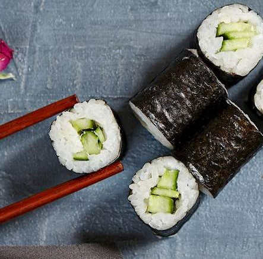

Sashimi
Vrsta "lažnog" Sushija. U većini restorana se navodi pod sushi, međutim ne služi se s rižom. On predstavlja tanko rezane i lijepo dekorirane filete ribe te ga stoga često nazivaju japanskim carpacciom.
Uramaki
Jedna od pet tradicionalnih vrsta sushi rola. Ime joj u doslovnom prijevodu znači obrnuta rola. Rižom se oblaže crnu algu i povrće te se zatim sve uvalja u crni sezam.

Kappamaki
Kappamaki je sushi rola sastavljena isključivo od nori alge, octom začinjene riže i jedne vrste povrća. Najčešća vrsta povrća korištena kod ove vrste sushija je japanski krastavac bez sjemenki.
Maki
Maki sushi pretstavlja vrstu sushija na koju svi pomislimo kada netko spomene sushi. Kombinacija povrća i ribe omotana i sloj začinjene riže te nori algu.
Nigiri
Smotuljak začinjene riže "natkriven" komadom svježe ili termički obrađene tanko rezane ribe.
Temaki
Još jedna u nizu varijacija Sushija. Temaki je smotuljak od alge punjen rižom, ribom i povrćem.